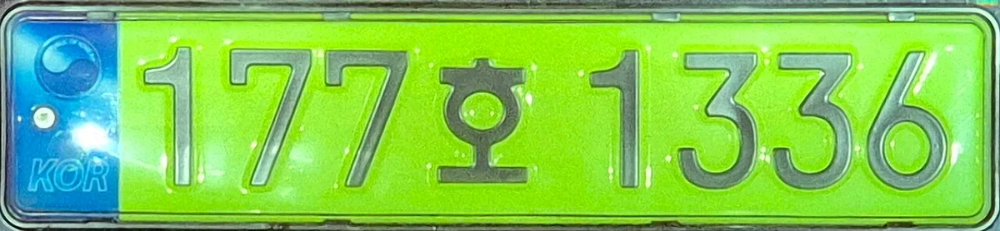
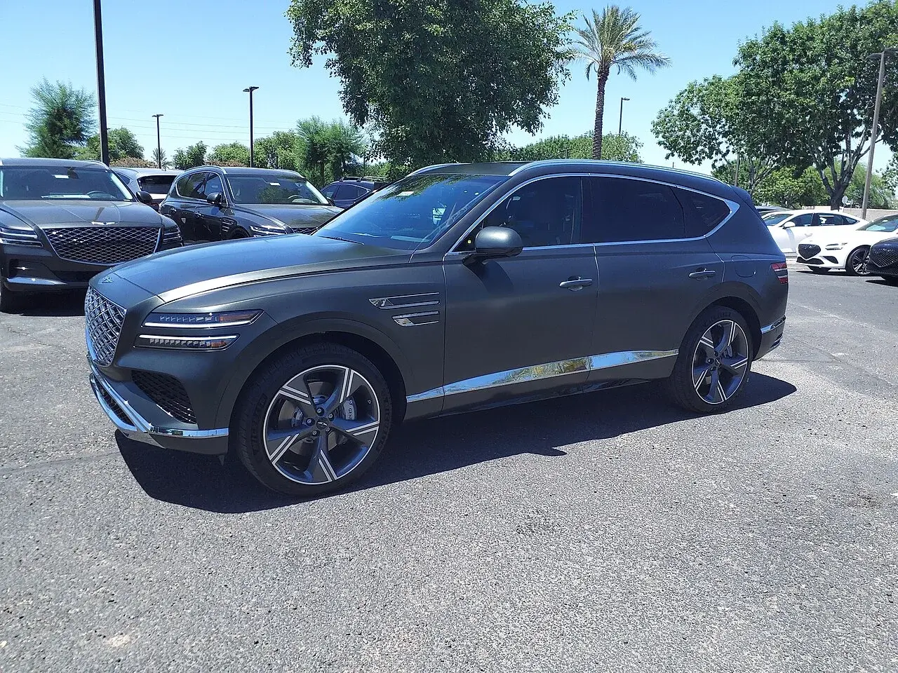
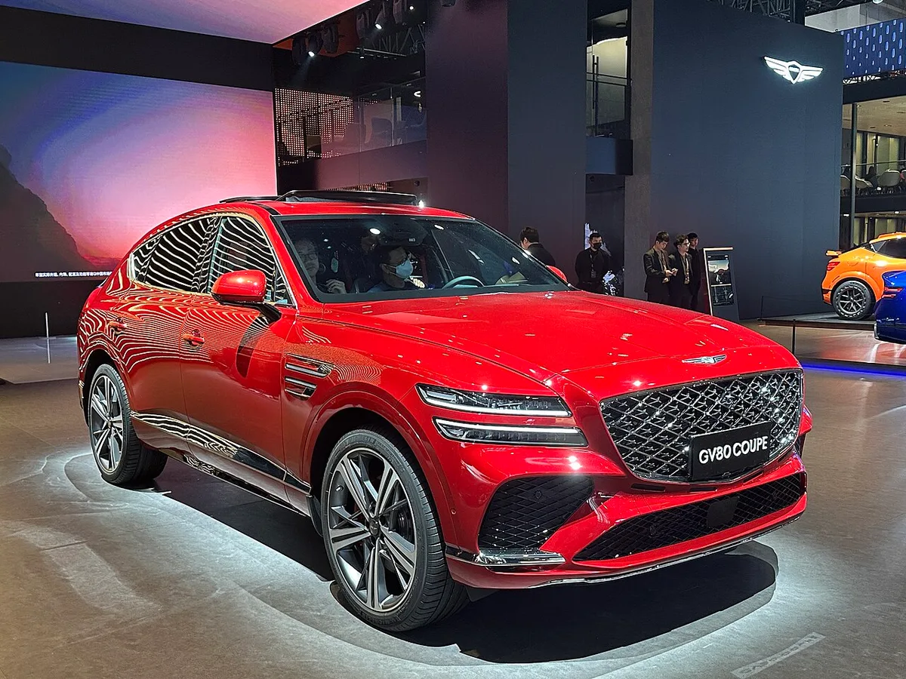
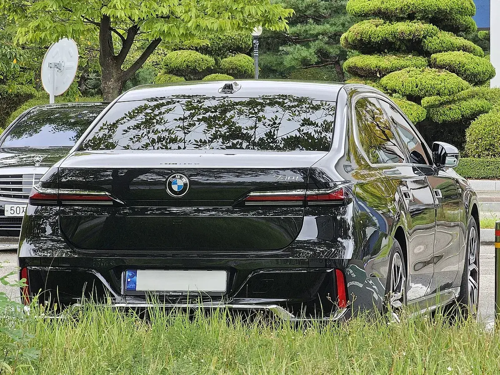
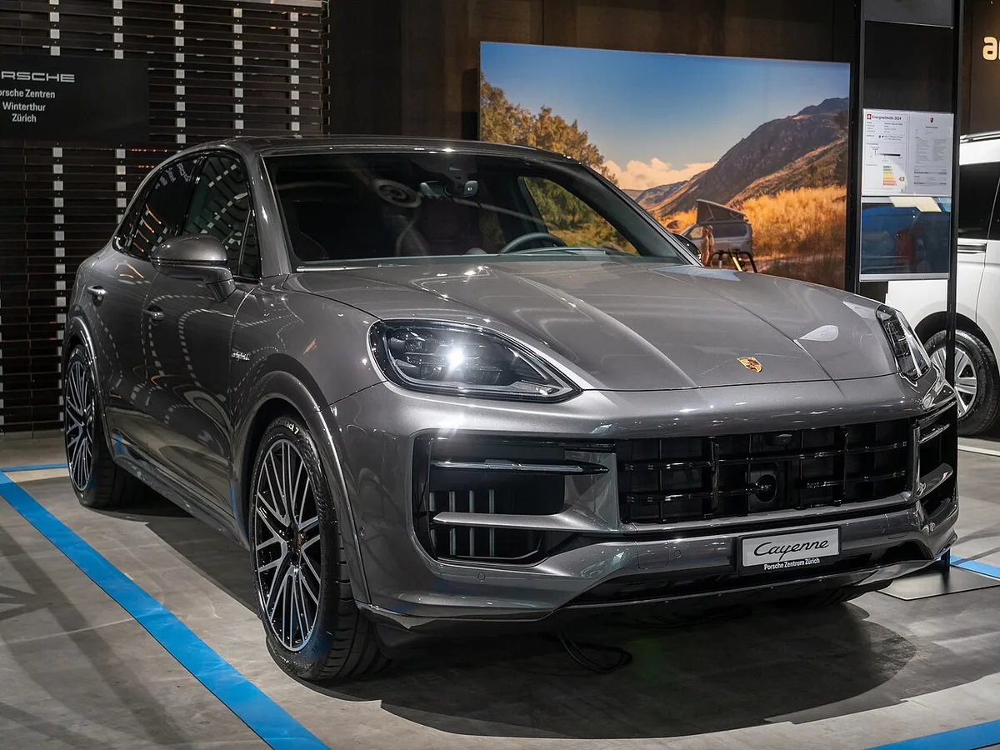
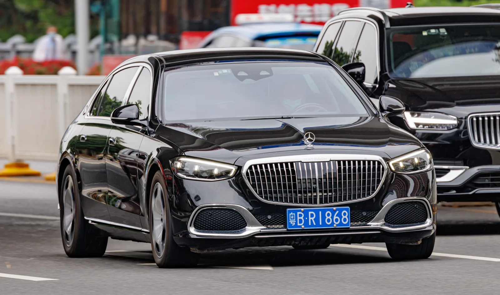
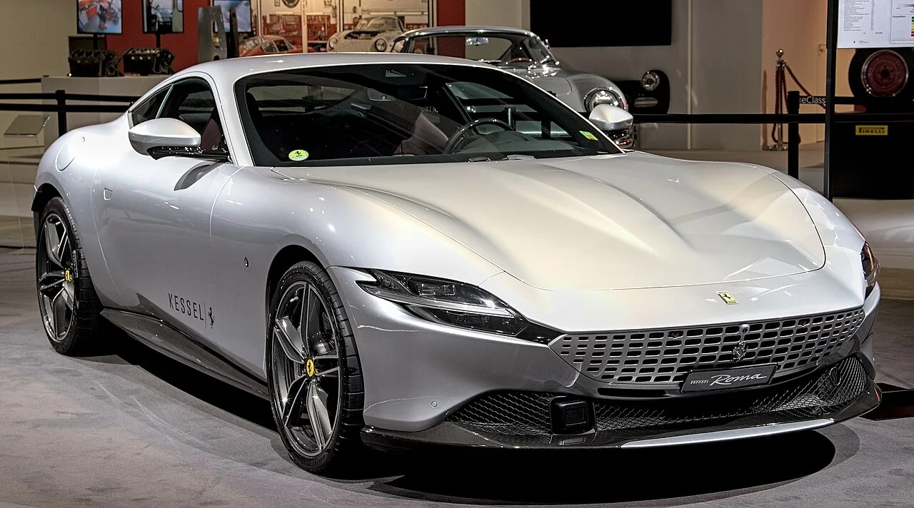

▲ 제네시스 G90은 연두색 번호판 시행 후 공개된 국토부 자료에서 단일 모델 부착 대수 1위였다 ⓒ Wikimedia Commons
2024년 1월, 8,000만 원 이상 법인 업무용 승용차에 연두색 번호판이 붙기 시작했다. 번호판 색으로 '회사 차'라는 사실을 드러내 사적 사용을 줄이겠다는 제도다.
그렇다면 연두색 번호판을 가장 많이 단 차는 무엇일까. 흔히 떠올리는 벤츠 S클래스도, 포르쉐도 아니었다. 공개된 국토교통부 자료에서 단일 모델 1위는 제네시스 G90이었다. 다만 브랜드 합계로 따지면 벤츠가 근소하게 앞선다(2024년 10월 16일 기준 벤츠 5,327대, 제네시스 5,276대).
📍 이 기사의 순위 기준 — 먼저 밝혀둡니다
주 기준: 국회 국토교통위원회 이연희 의원실이 국토교통부로부터 제출받아 공개한 연두색 번호판 부착 차량 현황(2024년 1월 1일~7월 18일, 총 1만2,621대). 제도 시행 후 차종별 수치가 공개된 가장 구체적인 공식 자료다.
한계: 이 자료는 국산차는 모델별 상위 3개, 수입차는 브랜드 합계와 브랜드별 최다 트림 1개만 공개했다. 연두색 번호판 차종별 TOP10 전체 순위는 국토부·국회 어디에서도 공개되지 않았다. 그래서 이 기사는 공개 수치로 확인되는 5개 차종을 수치 순으로 먼저 싣고, 나머지 5개는 카이즈유데이터연구소·한국수입자동차협회(KAIDA) 자료로 법인 비중이 높다고 확인되는 차종을 순위 없이 묶었다.
보조 자료: 국토부 자료(2024년 10월 16일 기준, 이연희 의원실), 카이즈유데이터연구소 8,000만 원 이상 법인 신차 등록 분석(2024~2025년), KAIDA 수입 법인차 상반기 등록(2024~2026년).
1. 연두색 번호판 제도, 무엇이 기준인가
기준은 배기량이 아니라 '차량 가액 8,000만 원'이다. 고가 전기차도 대상에 넣기 위해 가격을 기준으로 삼았고, 8,000만 원은 2,000cc 이상 대형 승용차의 평균 가격대를 고려한 수치로 알려졌다.

▲ 법인 업무용 승용차 전용 연두색 번호판. 번호 체계는 기존과 같고 바탕색만 다르다. 사진 속 '호'는 대여사업용(렌터카) 차량 글자로, 1년 이상 장기렌트 법인차도 부착 대상이다 ⓒ 177ho / Wikimedia Commons (CC0)
| 항목 | 내용 |
|---|---|
| 시행 | 2024년 1월 1일 이후 신규·변경 등록분부터 (기존 등록 차량 소급 적용 없음) |
| 대상 | 차량 가액 8,000만 원 이상 법인 업무용 승용차 — 민간·공공 법인 소유, 리스, 1년 이상 장기렌트, 관용차 포함 |
| 제외 | 경형·소형 승용차, 개인이 리스·렌트로 빌린 차, 개인사업자 명의 업무용 차량 |
| 가액 산정 | 세금을 뺀 차량 가격 기준. 시행 초기엔 출고가(공급가액) 기준으로 판단 |
| 2025년 7월 보완 | 공급가액과 기준가격(행정안전부 고시) 중 높은 금액으로 판단하고, 명의변경·계약변경에도 적용하도록 강화됐다고 안내됨 |
| 미부착 시 세무 | 의무 대상인데 부착하지 않으면 업무사용금액을 0원으로 봐 차량 관련 비용 전액이 손금불산입 |
번호판을 달지 않았을 때의 세무 불이익과 법인차 비용처리 한도(연 800만 원)는 별도 기사에서 자세히 다뤘다. 법인차 800만 원 한도 기사 바로가기
2. 연두색 번호판 법인차 TOP10 한눈에 보기
상위 5개는 국토부 자료에 공개된 수치끼리의 순서다. 6~10번은 공개 순위가 없어 번호를 순위가 아닌 목록 번호로만 붙였다.
| No. | 차종 | 확인된 수치 | 구분 |
|---|---|---|---|
| 1 | 제네시스 G90 | 2,801대 (10.16 기준 3,773대) | 모델 단위 |
| 2 | 제네시스 GV80 | 853대 | 모델 단위 |
| 3 | BMW 7시리즈 (740i xDrive) | 439대 | 트림 단위 |
| 4 | 벤츠 S클래스 (S500 4MATIC) | 401대 | 트림 단위 |
| 5 | 제네시스 GV80 쿠페 | 392대 | 모델 단위 |
| 6 | 포르쉐 (카이엔 등) | 브랜드 1,208대 (10.16 기준) | 순위 비공개 |
| 7 | 메르세데스-마이바흐 S클래스 | 2022년 말 운행 법인 비율 76.7% | 순위 비공개 |
| 8 | 람보르기니 우르스 | 2022년 말 운행 법인 비율 85.9% | 순위 비공개 |
| 9 | 페라리 | 2025년 1~5월 법인 비율 89.2% | 순위 비공개 |
| 10 | 제네시스 G80 (경계선 아래 대표) | 2022년 말 운행 법인 비율 32.4% | 대부분 비대상 |
⚠️ 표를 읽을 때 주의할 점
· 수입차 3·4번은 트림 하나의 수치다. 7시리즈·S클래스 전체 합계는 공개되지 않아, 모델 합계로 보면 2번 GV80(853대)보다 많을 수도 있다
· 같은 이유로 트림 수치조차 공개되지 않은 다른 수입 모델(벤츠 E클래스, BMW 5시리즈 등)의 모델 합계가 5번 GV80 쿠페(392대)를 넘을 가능성도 배제할 수 없다. 국토부 자료 보도에서 '단일 모델 최다'로 명시된 것은 1위 G90뿐이다
· 제목의 '1위'는 단일 모델 기준이다. 브랜드 합계로는 10월 16일 기준 벤츠(5,327대)가 제네시스(5,276대)를 51대 앞선 1위다
· 같은 기간 수입 브랜드 합계는 벤츠 3,366대, BMW 2,451대로 국산 1위 G90(2,801대)과 비슷하거나 많다
· 6~10번은 자료 종류와 기간이 제각각이어서 서로 순위를 비교할 수 없다
3. 1위 제네시스 G90 — 단일 모델로는 압도적
▲ 현행 4세대(RS4) 제네시스 G90. 연두색 번호판 시행 후 단일 모델 부착 대수 1위다. 사진은 스위스 번호판 차량 ⓒ Wikimedia Commons
G90은 연두색 번호판 시행 7개월 동안 2,801대, 10월 16일까지 3,773대(롱휠베이스·리무진 포함)가 이 번호판을 달았다. 국산 연두색 번호판 차량 4,388대 가운데 절반 이상이 G90 한 모델이다.
왜 법인이 G90을 고르나. 제도 이전부터 G90은 법인 차였다. 카이즈유데이터연구소 분석으로 2022년 말 운행 중인 G90의 72.0%(4만1,144대)가 법인 명의였고, 이는 1억~2억 원 가격대 1위 법인 비율이었다. 대기업 총수들이 공식 석상에 타고 나타나 '회장님 차'라는 별칭도 붙었다.
| 기간 | G90 | 벤츠 S클래스 |
|---|---|---|
| 2023년 (제도 시행 전) | 1만105대 | 7,705대 |
| 2024년 | 5,580대 (-44.8%) | 3,381대 (-56.1%) |
| 2025년 1~5월 | 2,494대 (2023년 동기 대비 -41.3%) | 1,187대 (2023년 동기 대비 -62.9%) |
8,000만 원 기준과의 관계: G90은 기본 트림부터 9,748만 원이고 롱휠베이스 블랙은 1억7,498만 원까지 올라간다. 어떤 트림을 사도 기준선을 넘기 때문에 법인 명의라면 연두색 번호판을 피할 수 없다. 그럼에도 1위를 지켰지만, 법인 등록 절대량은 제도 이후 절반 가까이 줄었다.
G90의 실제 오너 평가와 트림별 가격은 아래 기사에서 확인할 수 있다. G90 오너 평가 기사 바로가기
4. 2위 GV80·5위 GV80 쿠페 — 법인 SUV의 기준선

▲ 제네시스 GV80(1세대). 국산 연두색 번호판 차량 가운데 G90 다음으로 많았다 ⓒ HJUdall, Wikimedia Commons (CC0)
GV80은 같은 기간 853대로 국산 2위, 쿠페형 GV80 쿠페는 392대로 3위였다. 두 모델을 합치면 1,245대로, G90을 제외한 국산 연두색 번호판 차량(1,587대)의 약 78%를 차지한다.
8,000만 원 기준과의 관계: GV80은 기준선에 걸쳐 있는 차다. 2.5 가솔린 시작가가 6,886만 원이라 기본 사양은 기준 아래지만, 상위 트림에 옵션을 더하면 8,000만 원을 넘길 수 있다. 즉 연두색 번호판을 단 853대는 기준선을 넘긴 사양으로 산 법인 수요로 볼 수 있다. 2026년 10월 판매 예정인 GV80 하이브리드도 업계에서 시작가가 7,900만~8,000만 원 초반대로 전망되며 '8,000만 원 미만'이 관전 포인트로 꼽힌다.

▲ 제네시스 GV80 쿠페. 2024년 7월 18일까지 392대가 연두색 번호판을 달았다 ⓒ JustAnotherCarDesigner / Wikimedia Commons (CC0)
GV80 하이브리드의 예상 가격과 8,000만 원 경계선 이야기는 아래 기사에 정리돼 있다. GV80 하이브리드 가격 전망 바로가기
5. 3위 BMW 740i xDrive·4위 벤츠 S500 4MATIC — 트림으로만 공개된 수입 강자
수입차는 브랜드 합계로 보면 국산보다 많았다. 2024년 7월 18일까지 연두색 번호판 1만2,621대 중 수입차가 8,233대(65.2%)였고, 벤츠 3,366대, BMW 2,451대가 1·2위 브랜드였다. 트림 단위 최다는 BMW 740i xDrive 439대, 벤츠 S500 4MATIC 401대였다.

▲ BMW 740i xDrive(7세대, G70). 연두색 번호판 부착 수입차 트림 중 가장 많았다 ⓒ Damian B Oh / Wikimedia Commons (CC BY-SA 4.0)

▲ 메르세데스-벤츠 S클래스(W223). 2024년 법인 등록이 전년 대비 56.1% 줄며 G90보다 감소 폭이 컸다. 사진은 중국 번호판 차량 ⓒ Wikimedia Commons
왜 법인이 많이 사나: 두 차는 각 브랜드의 플래그십 세단으로 임원 의전용 수요가 꾸준하다. 8,000만 원 기준과의 관계는 G90과 같다. 2026년 국내 출시된 신형 S클래스는 1억5,400만~2억7,000만 원으로, 전 트림이 기준선을 크게 넘는다.
감소 폭은 S클래스가 더 컸다. 8,000만 원 이상 법인 신차 기준 S클래스는 2023년 7,705대에서 2024년 3,381대로 56.1% 줄었고, 2025년 1~5월에는 1,187대로 2023년 같은 기간보다 62.9% 감소했다. 같은 기간 G90(-41.3%)보다 하락이 가팔랐다.
6. 포르쉐 — 제도 첫해 반토막, 이후 회복

▲ 포르쉐 카이엔(3세대 부분변경). 연두색 번호판 통계는 포르쉐 브랜드 합계만 공개돼 있어 사진은 대표 SUV로 실었다 ⓒ Matti Blume / Wikimedia Commons (CC BY-SA 4.0)
포르쉐는 2024년 10월 16일까지 1,208대(전체의 6.7%)가 연두색 번호판을 단 것으로 집계됐다. 모델별 수치는 공개되지 않았다.
| 기간 | 법인 등록 | 비고 |
|---|---|---|
| 2023년 상반기 | 3,624대 | 제도 시행 전 |
| 2024년 상반기 | 1,741대 | 시행 첫해, 절반 이하로 감소 |
| 2025년 상반기 | 3,063대 | 반등 |
| 2026년 상반기 | 2,582대 | 2023년 수준보다는 낮음 |
카이즈유데이터연구소 집계로도 포르쉐의 8,000만 원 이상 법인 등록은 2024년 1~7월 2,219대로 전년 동기 대비 47.0% 줄었다. 반면 1억 원 이상 법인 등록 기준으로는 2025년 1~4월 1,827대로 전년 동기보다 약 30% 늘어, 제도 효과가 첫해에 집중됐다는 해석이 나왔다.
7. 마이바흐·우르스·페라리 — 대수는 적지만 법인 비율은 최상위
초고가 차종은 등록 대수가 수십~수백 대에 그치지만 법인 명의 비율이 극단적으로 높다. 연두색 번호판 제도가 겨냥한 핵심 계층이기도 하다.

▲ 메르세데스-마이바흐 S클래스(W223). 2022년 말 기준 2억~3억 원대에서 법인 비율이 가장 높았다. 사진은 중국 번호판 차량 ⓒ Wikimedia Commons
| 차종·브랜드 | 법인 비율 | 기준 |
|---|---|---|
| 메르세데스-마이바흐 S클래스 | 76.7% (4,577대/5,967대) | 2022년 말 운행 차량, 2억~3억 원대 1위 |
| 람보르기니 우르스 | 85.9% (797대/928대) | 2022년 말 운행 차량, 3억 원 이상 1위 |
| 페라리 (브랜드) | 89.2% | 2025년 1~5월 신차 등록 |
| 람보르기니 (브랜드) | 78.5% | 2025년 1~5월 신차 등록 |
| 마세라티 (브랜드) | 73.2% | 2025년 1~5월 신차 등록 |
| 롤스로이스 (브랜드) | 70.9% | 2025년 1~5월 신차 등록 |

▲ 람보르기니 우르스 S. 우르스는 제도 이전부터 10대 중 8대 이상이 법인 명의였다 ⓒ Wikimedia Commons
제도 첫해엔 이 계층이 가장 크게 흔들렸다. 카이즈유데이터연구소에 따르면 2024년 1~7월 맥라렌 법인 등록은 85.0%, 애스턴마틴은 96.2% 줄었고, 2024년 연간으로 벤틀리 50.6%, 마세라티 42.2% 감소했다. 하지만 2025년 1~4월 1억 원 이상 법인차는 1만2,221대로 전년 동기보다 22.3% 늘었고, 페라리는 115대(+35%)를 기록했다. 람보르기니 법인 등록은 2023~2025년 상반기 162~166대 수준에서 2026년 상반기 179대로 늘었다.

▲ 페라리 로마. 2025년 1~5월 기준 페라리 신차 10대 중 9대가량이 법인 명의로 등록됐다 ⓒ Wikimedia Commons
8. 번외 성격의 10번, 제네시스 G80 — '연두색을 피한' 법인 수요

▲ 2026년형 제네시스 G80. 대부분 트림이 8,000만 원 아래라 법인이 사도 연두색 번호판 대상이 아닌 경우가 많다 ⓒ 제네시스
G80은 연두색 번호판 순위표에 이름이 없다. 하지만 법인 수요 지도에서는 빠질 수 없는 차다. 2022년 말 기준 6,000만~1억 원 가격대에서 법인 비율 1위(32.4%, 9만1,373대/28만2,120대)였다.
제도 이후 법인 수요는 이 가격대로 이동했다. 카이즈유데이터연구소 분석에서 전체 법인차 중 8,000만 원 이상 비중은 2023년 15.9% → 2024년 11.5% → 2025년 1~5월 11.3%로 줄었고, 4,000만~6,000만 원대 비중은 23.3%에서 28.3%로 늘었다. 기준선 바로 아래 차가 반사이익을 봤다는 뜻이다.
9. 제도 전후 무엇이 달라졌나 — 감소, 가격 맞추기, 그리고 우회
숫자로 보면 제도 첫해 효과는 분명했다. 8,000만 원 이상 법인 신차 등록은 2023년 6만7,922대에서 2024년 4만8,327대로 28.8% 줄었다. 2024년 1~7월만 봐도 3만7,906대에서 2만7,400대로 1만 대 넘게 감소했다. 2025년 1~5월 등록도 2만1,278대에 그쳤다.
| 지표 | 제도 전 | 제도 후 | 출처 |
|---|---|---|---|
| 8,000만 원 이상 법인 신차 (연간) | 6만7,922대 (2023) | 4만8,327대 (2024) | 카이즈유 |
| 법인차 중 8,000만 원 이상 비중 | 15.9% (2023) | 11.3% (2025.1~5) | 카이즈유 |
| 수입 법인차 상반기 등록 | — | 4만2,200대 (2024) → 5만30대 (2025) → 6만723대 (2026) | KAIDA 인용 보도 |
| 연두색 번호판 누적 부착 | — | 1만2,621대 (2024.7.18) → 1만7,936대 (2024.10.16) | 국토부 |
📍 '8,000만 원 아래로' 맞추는 방법들 — 확인된 보도
· 저가 신고: 국토부 자료(김은혜 의원실)에 따르면 2024년 상반기 등록된 8,000만 원 이상 수입 법인차 1만8,898대 중 6,290대가 8,000만 원보다 싸게 샀다고 신고했다. 소비자가 1억 원이 넘는데 8,000만 원 이하로 신고된 차도 306대였고, 정가 2억4,940만 원인 BMW M8 쿠페 컴페티션 일부가 5,000만~8,000만 원으로 신고된 사례도 보도됐다(중앙일보, 2024.9).
· 다운계약·연식 조작·명의 우회: 계약서는 8,000만 원 아래로 쓰고 차액은 현금으로 내는 방식, 차대번호상 제작연도를 바꾸는 방식, 개인 명의로 등록한 뒤 법인 차로 쓰는 방식이 지적돼 국토부가 2024년 신규·변경 등록 법인 승용차 전수조사에 착수했다.
· 7,999만 원 중고 법인차: 중고차는 매입가 기준이 적용되던 점을 이용해 7,999만 원에 맞춘 수입 중고 매물이 유통된다는 보도가 나왔다(경인일보, 2025.6).
· 할인으로 기준 아래: 가액은 세금을 뺀 실제 차량 가격으로 따지므로, 출고가가 8,000만 원을 넘어도 할인으로 8,000만 원 미만이 되면 부착 대상에서 빠진다는 설명도 나왔다(헤럴드경제, 2024.2).
업계 안내에 따르면 2025년 7월부터 공급가액과 기준가격 중 높은 금액으로 판단하고 명의변경·계약변경에도 적용하도록 보완됐다. 이런 우회로를 좁히기 위한 조치로 풀이되지만, 국토부 공식 보도자료로는 세부 내용이 확인되지 않았다.
10. 효과는 있었나 — 2026년의 반등과 남은 쟁점
2026년 들어 흐름이 다시 바뀌었다. KAIDA 자료를 인용한 보도에 따르면 2026년 상반기 수입 법인차 등록은 6만723대로 전년 동기 대비 21.4% 늘었다. 업계에선 연두색 번호판이 오히려 '부의 상징'처럼 받아들여진다는 평가가 나온다. KAIDA 기준 2025년 연간 수입차 구매자 중 법인 비중은 35.8%였다.
✅ 확인된 향후 쟁점
· 국세청 세무조사: 2026년 5월 20일 국무회의에서 이재명 대통령이 법인 명의 고급 외제차의 사적 사용을 지적했고, 국세청은 5월 28일 19개 법인, 고가 차량 90대(약 300억 원), 탈루 혐의 약 3,000억 원 규모의 세무조사를 발표했다
· 기준 금액 논란: 전문가들 사이에서 8,000만 원이라는 기준선이 자의적이라는 지적과 함께 모든 법인차로 확대하거나 운행기록 관리를 병행해야 한다는 주장이 나온다. 다만 기준 금액 변경이 확정된 것은 아니다
· 우회 차단: 저가 신고·다운계약 적발과 2025년 7월 기준가격 비교 도입(업계 안내 기준)이 실제로 우회를 줄였는지는 아직 공개된 후속 통계가 없다
개인사업자는 연두색 번호판 대상이 아니지만 세금 처리 방식이 다르다. 개인사업자 차량 리스의 세금 혜택은 아래 기사에서 정리했다. 개인사업자 리스 세금 기사 바로가기
11. 요약
연두색 번호판을 가장 많이 단 단일 모델은 제네시스 G90이다. 국토부 자료 기준 2024년 7월 18일까지 2,801대, 10월 16일까지 3,773대였다. 그 뒤로 GV80(853대), BMW 740i xDrive(439대, 트림), 벤츠 S500 4MATIC(401대, 트림), GV80 쿠페(392대)가 확인된다. 브랜드로는 벤츠·제네시스·BMW가 약 80%를 차지했다. 차종별 TOP10 전체 순위는 공식적으로 공개되지 않았다.
제도 첫해에는 고가 법인차가 28.8% 줄었고, 법인 수요는 8,000만 원 아래 가격대로 이동했다. 동시에 저가 신고·다운계약·중고 우회 같은 '가격 맞추기'가 드러나 국토부 전수조사로 이어졌고, 2025년 7월에는 가액 판단 기준이 보완됐다고 안내됐다.
2026년에는 수입 법인차 상반기 등록이 21.4% 늘며 반등했고, 국세청이 법인 슈퍼카 사적 사용 세무조사에 나섰다. 번호판 색만으로 사적 사용을 막을 수 있는지, 기준 금액과 적용 범위를 손봐야 하는지가 남은 쟁점이다.